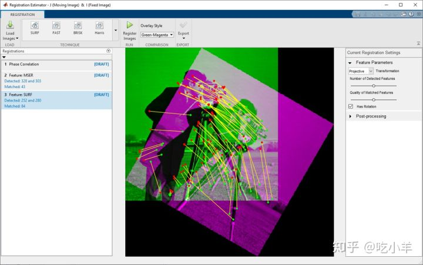
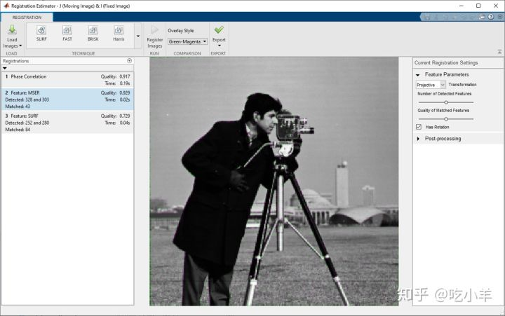
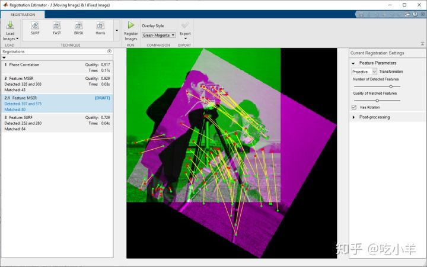
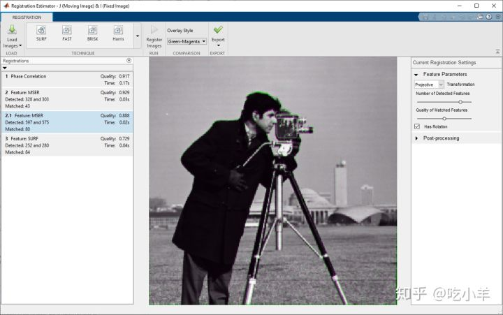
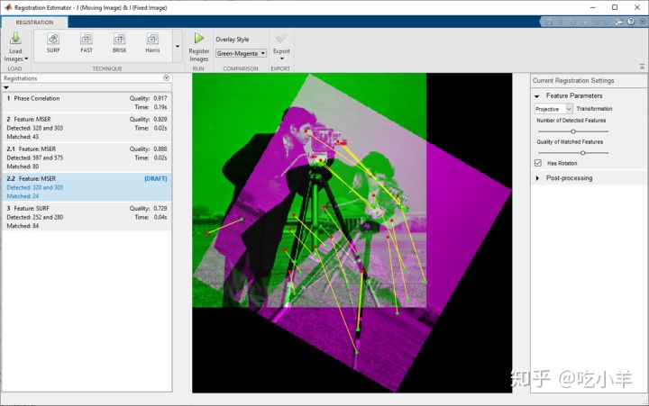
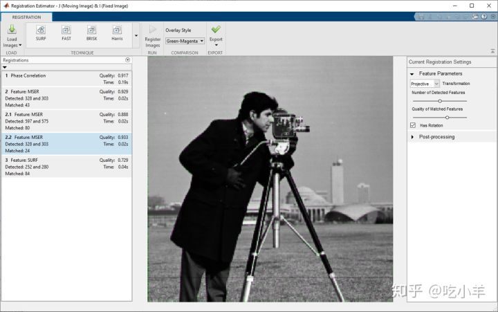

Home
本示例说明了如何使用注册估算器应用程序对齐一对图像。配准估计器提供了几种使用基于特征，基于强度和非刚性配准算法的配准技术。有关更多信息，请参见注册估算器应用支持的技术。
在工作区中创建两个未对齐的图像。本示例通过将固定图像I顺时针旋转30度来创建运动图像J。
I = imread('cameraman.tif');
J = imrotate(I,-30);
开启配准估算器
在此示例中，因为图像没有空间参考信息或初始变换估计，所以可以从命令窗口打开“配准估计器”。在命令窗口中运行此命令，并将运动图像和固定图像指定为两个输入参数。
registrationEstimator(J,I)
如果图像具有空间参考信息，或者要指定初始转换估计，则必须使用对话框窗口加载图像。有关更多信息，请参见加载图像，空间参考信息和初始转换。
您也可以从MATLAB™工具栏打开配准估算器。打开“应用程序”选项卡，然后在“图像处理和计算机视觉”下单击“配准估算器”。如果从工具栏打开应用程序，则必须使用对话框窗口加载图像。
获取初始配准估算
您加载图像后，应用程序显示叠加的图像，并创建了三个配准试验：Phase Correlation，Feature: MSER，和Feature: SURF。这些试验在历史记录列表中显示为草稿。您可以单击每个试用版来调整配准设置。要为其他配准技术创建试用版，请从“技术”菜单中选择一种技术。
默认的“绿色-品红色”叠加样式以绿色显示固定图像，并以洋红色显示运动图像。在两个图像具有相似强度的区域中，叠加层看起来是灰色的。其他叠加样式有助于可视化配准结果。当您在历史记录列表中单击基于特征的技术时，图像叠加层将显示一组由黄线连接的红色和绿色点。这些点是用于对齐图像的匹配功能。

使用默认设置运行三个默认配准试用版。点击历史记录列表中的每个试用版，然后点击配准图像。
配准完成后，试用版将显示质量得分和计算时间。质量得分宽松地基于ssim功能，并提供配准质量的整体估计。分数接近1表示更高质量的配准。不同的配准技术和设置可以产生相似的质量得分，但会在图像的不同区域显示错误。检查图像覆盖层，以确认哪种配准技术最可接受。图像叠加层中的颜色表示残留的未对准。
注意：由于配准优化器的随机性，尽管配准设置相同，但质量得分，配准图像和几何变换在两次试验之间可能会略有不同。

优化配准设置
有了初始配准估计后，请调整配准设置以提高对齐质量。有关可用设置的更多信息，请参阅注册估计器应用程序中的音调配准设置。如果知道获取图像的条件，则可以选择其他变换类型或清除“具有旋转”选项。使用非刚性转换的后处理可用于高级工作流程。 调整MSER试用版的设置。尝试分别增加检测到的特征的数量和匹配特征的质量，以查看两者中的一项是否可以提高配准质量。 要增加检测到的功能的数量，请在历史记录列表中单击编号为2的试用版Feature: MSER。在“当前配准设置”面板中，向右拖动“检测到的特征数量”滑块。更改设置后，应用程序会在历史记录列表中创建一个新的试用版，编号为2.1。图像叠加层显示了更多匹配的功能，如预期的那样。

要使用这些设置运行配准，请点击配准图像。该试用版的质量指标低于具有默认匹配功能数量的原始MSER试用版的质量。该试验的图像覆盖层具有整体的品红色色调，并且沿着该人的头部顶部具有一条较厚的绿色条纹。因此，将检测到的特征的数量从43增加到80并不能提高配准质量。

要查看提高匹配功能质量的效果，请单击历史记录列表中的试用版2（而非2.1）Feature: MSER。在“当前配准设置”面板中，向右拖动“匹配功能的质量”滑块。更改设置后，应用程序会在历史记录列表中创建一个新的试用版，编号为2.2。图像叠加层显示较少数量的高质量匹配点。

要查看使用这些设置进行的配准，请点击配准图像。与其他MSER试验相比，该试验的质量得分最高。与具有默认设置的原始MSER试用版相比，图像的视觉质量没有明显差异。如果要查看默认MSER试用版和该试用版之间哪些像素不同，请将叠加样式更改为“差异”，然后在两个试用版之间切换。

导出登记结果
找到可接受的配准后，将配准的图像和几何变换导出到工作区。您可以使用配准结果对图像序列中的多个帧应用类似的配准。要了解更多信息，请参阅从Registration Estimator App导出结果。
本示例导出试验2.2，因为它具有最佳的质量得分，并且没有严重的未对准区域。单击历史记录列表中的试用版2.2，然后单击“导出”并选择“导出图像”。在“导出到工作区”对话框中，为配准输出分配一个名称。输出是包含最终配准图像和几何变换的结构。
======================================================================
我的测试结果及程序
下面是我测试的代码：

注：本文根据MATLAB官网内容修改而成。